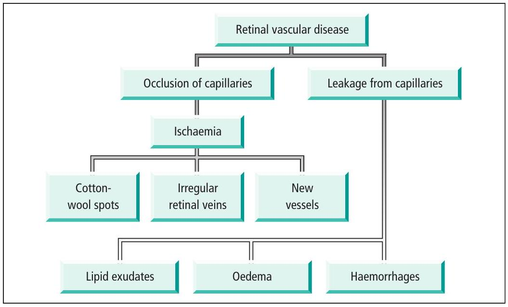
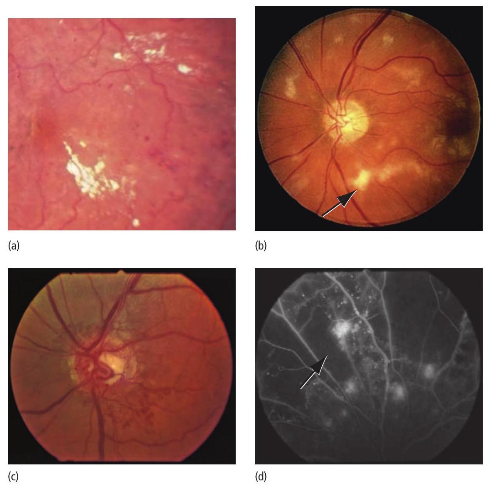
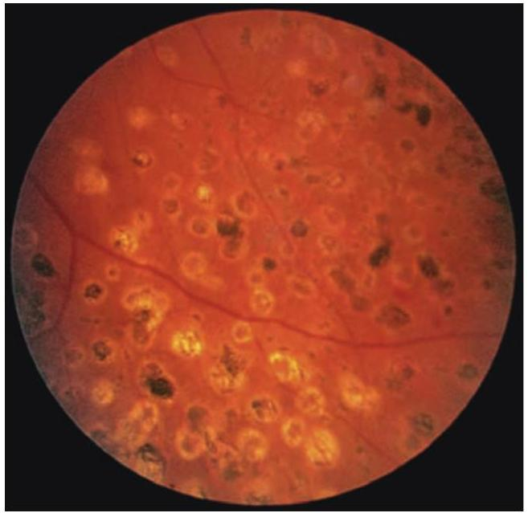
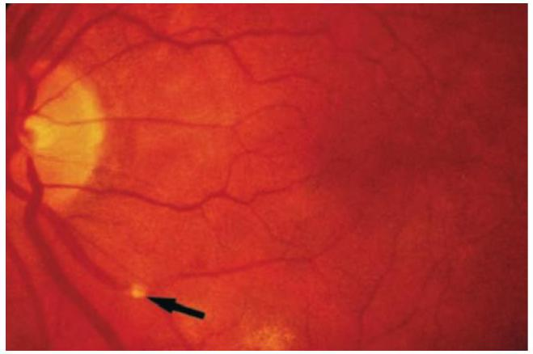
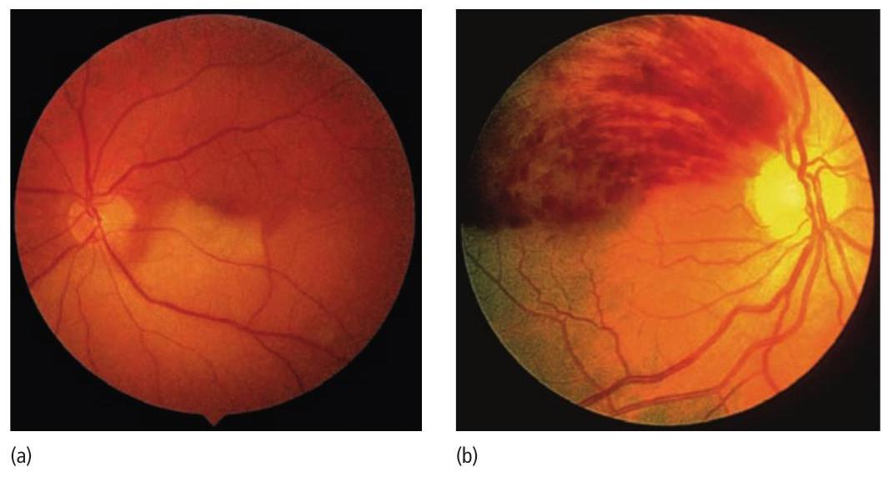
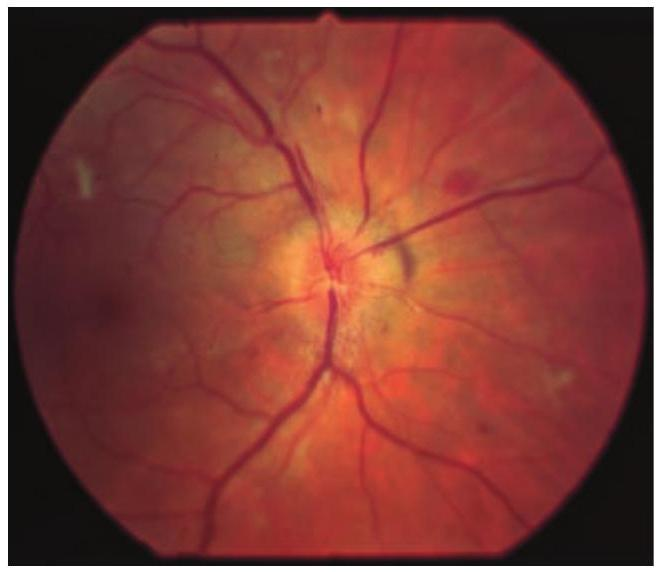
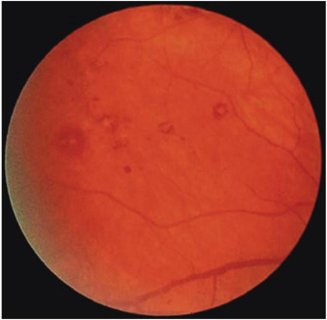
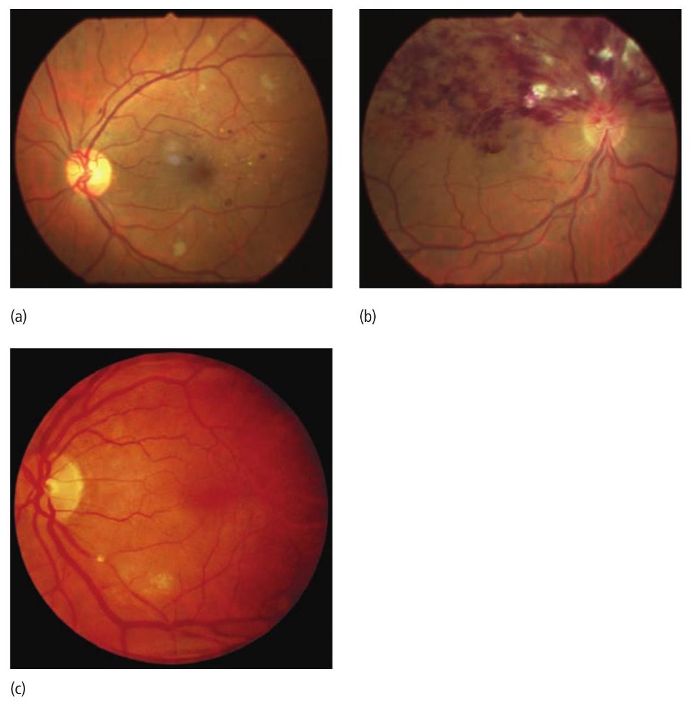

✓The classification and treatment of diabetic retinopathy.
✓The symptoms, signs and complications of retinal arterial and venous occlusion.
✓The causes, features and treatment of retinopathy of prematurity.
Introduction
The eye is an organ in which much of the microcirculation is readily visualized. Vascular disease affecting the eye can thus be seen directly. Furthermore the eye provides important clues about pathological vascular changes in the rest of the body.
Signs of retinal vascular disease
The signs of retinal vascular disease (Figures 12.1, 12.2) result from two changes to the retinal capillary microcirculation:
vascular leakage;
vascular occlusion.

Figure 12.1 The building blocks of retinal vascular disease. Capillary leakage and occlusion often occur together.
Leakage from the microcirculation
This results in:
haemorrhages caused by leakage of blood from damaged vessels;
oedema of the retina, the result of fluid leakage from damaged vessels;
exudates formed by lipids, lipoprotein and lipid-containing macrophages these are yellow in colour, with well defined margins.

Figure 12.2 The signs of retinal vascular disease: (a) haemorrhage and exudate; (b) cotton-wool spots, note the yellowish nature and distinct margin to the exudates, compared to the less distinct and whiter appearance of the cotton-wool spots; (c) new vessels, here particularly florid and arising at the disc: (d) this fluorescein angiogram demonstrates the occlusion of the retinal capillary circulation (the dark areas (arrow)), the bright areas indicate leakage from new vessels.
Occlusion of the microcirculation
This results in:
Cotton-wool spots (previously termed soft exudates), fluffy white focal lesions with indistinct margins. They occur at the margins of an ischaemic retinal infarct due to obstruction of axoplasmic flow and build-up of axonal debris in the nerve fibre layer of the retina. Their visibility depends on nerve fibre layer thickness at that site, so they are readily seen close to the optic disc, where the nerve fibre layer is thick, and not in the periphery, where the nerve fibre layer is thin. They are white in colour because the accumulated axoplasmic particles scatter light, whereas the normal nerve fibre is transparent.
New vessels. An ischaemic retina releases vasogenic factors (e.g. VEGF) which result in the growth of abnormal blood vessels and fibrous tissue onto the retinal surface and forwards into the vitreous. These intravitreal vessels are much more permeable than normal retinal vessels, so that they leak dye during retinal fluorescein angiography. Their abnormal location predisposes them to break and bleed.
Diabetic retinopathy
Diabetes results from a defect in both insulin secretion and action, leading to hyperglycaemia.
Epidemiology
Diabetic eye disease is the commonest reason for blind registration in the UK, in the 30-65 age group.
Type I diabetes (eventual loss of insulin secretion, mostly in young people with associated HLA types) has a prevalence in the UK of 2 per 1000 under the age of 20. Onset is relatively acute and diabetic retinopathy begins to appear about 5 years after onset.
Type II diabetes occurs in a heterogeneous group of patients and shows familial aggregation. Patients usually retain some insulin secretion but develop resistance to the action of insulin. It occurs in an older age group and has a prevalence of 5-20 per 1000. Because type II diabetes may be present for several years prior to diagnosis, retinopathy may be found at presentation.
Diabetes is associated with the following ocular events:
retinopathy;
cataract: a rare ‘snowflake’ cataract in youth, and a greater frequency and earlier onset of age-related cataract;
glaucoma (e.g. rubeotic glaucoma, but an association with chronic open angle glaucoma is disputed);
extraocular muscle palsy due to microvascular disease of the third, fourth or sixth cranial nerves.
Pathology
Factors thought to be important in the development of diabetic retinopathy include:
duration of diabetes: 80% have retinopathy after 20 years of disease;
poor diabetic control;
coexisting diseases, particularly hypertension;
smoking.
The development of retinopathy may also be accelerated by pregnancy, and patients require careful screening.
Retinal damage results from damage to the circulation. Pathological studies show:
a decrease in the number of pericytes surrounding the capillary endothelium;
development of microaneurysms on the capillary network, which allow plasma to leak out into the retina;
patchy closure of the capillary net, (capillary non-perfusion), resulting in areas of ischaemic retina and the development of arteriovenous shunts.
History
Diabetic retinopathy should be diagnosed before it is symptomatic. All diabetics should have fundoscopy performed at least yearly. Screening for sightthreatening retinopathy (maculopathy and proliferative retinopathy) should begin by 5 years after diagnosis in patients with type I disease, and may be from the time of presentation in type II disease, since its time of onset is unknown. Visual acuity may be reduced gradually by a maculopathy, or suddenly by a vitreous haemorrhage.
Examination
The building blocks of the disease are those of leakage and microvascular occlusion, discussed earlier. The classification of retinopathy is shown in Table 12.1.
Treatment
All diabetic patients should be screened for signs of retinopathy (Figure 12.3). In the UK a screening programme using digital retinal photographs is being used to review patients on a yearly basis.
Figure 12.3 The signs of diabetic eye disease. (a) Background diabetic retinopathy. (b) Diabetic maculopathy: note the circinate exudate temporal to the macula. (c) Preproliferative retinopathy with a venous loop. (d, e) Proliferative retinopathy: new vessels have formed on the retina, their presence demonstrated by leakage of fluorescein (hyperfluorescence) on the fluorescein angiogram; closure of some of the retinal capillary network is demonstrated by its failure to fill with fluorescein. (f) Advanced diabetic retinopathy: the neovascularization has caused a traction retinal detachment.
Table 12.1 The classification of diabetic retinopathy (note that diabetic maculopathy may coexist with other stages in the classification).
Stage
Description
No retinopathy
There are no abnormal signs present on the retina. Vision normal
Background
Signs of microvascular leakage (haemorrhage and exudates) away from the macula. Vision normal
Maculopathy
Exudates and haemorrhages within the macula region, and/or evidence of retinal oedema, and/or evidence of retinal ischaemia. Vision is reduced; sight-threatening
Preproliferative
Evidence of occlusion (cotton-wool spots). The veins become irregular and may show loops. Vision normal
Proliferative
The occlusive changes have led to the release of a vasoproliferative substance from the retina, resulting in the growth of new vessels either on the disc (NVD) or elsewhere on the retina (NVE). Vision normal; sight-threatening
Advanced
The proliferative changes may result in bleeding into the vitreous or between the vitreous and the retina. The neuroretina may also be pulled from its overlying pigment epithelium by a fibrous proliferation associated with the growth of the new vessels. Vision is reduced, often acutely, with vitreous haemorrhage; sight-threatening
Patients with a maculopathy, preproliferative or proliferative retinopathy or worse require referral to an ophthalmologist. Any patient with unexplained visual loss should also be referred. The mainstay of treatment for sightthreatening diabetic retinopathy is laser therapy. A fluorescein angiogram may be performed in some patients to assess the degree of retinal ischaemia and to pinpoint areas of leakage both from microaneurysms and from new vessels.

Figure 12.4 Typical appearance of retinal laser burns.
Laser treatment of both the maculopathy and new vessels can be performed on an outpatient basis.
Diabetic maculopathy is treated by aiming the laser at the points of leakage. The exudate is often seen to be in a circinate pattern, with the focus of leakage or microaneurysm in the middle. If treatment is effective, the retinal oedema and exudate will resorb, although this may take some months.
Optic disc and retinal new vessels are treated with scattered laser burns to the entire retina, leaving an untreated area around the macula and optic disc (Figure 12.4). The laser treatment eliminates ischaemic retina, thus preventing the release of vasoproliferative factors. This results in the regression of the new vessels and prevents the development of advanced retinopathy.
The development of vitreous haemorrhage which does not clear after a few weeks, or fibrous traction on the retina causing detachment from the overlying pigment epithelium (traction retinal detachment), may require surgical treatment. A vitrectomy is performed to remove the vitreous gel and blood and to repair any of the detached retina.
Prognosis
Although laser and surgical treatments have greatly improved the prognosis of patients with diabetic retinopathy, the disease may still progress and cause severe visual loss in some patients.
Arterial occlusion
Pathogenesis
Central and branch retinal artery occlusions are usually embolic in origin. Three types of emboli are recognized:
fibrin-platelet emboli, commonly from diseased carotid arteries;
cholesterol emboli, commonly from diseased carotid arteries (Figure 12.5);
calcific emboli, from diseased heart valves.

Figure 12.5 The clinical appearance of a cholesterol embolus (arrow). They appear to sparkle when viewed with a direct ophthalmoscope.
History
The patient complains of a sudden painless loss of all or part of the vision. Fibrin-platelet emboli typically cause a fleeting loss of vision as the emboli pass through the retinal circulation (amaurosis fugax). This may last for some minutes, and then it clears. Cholesterol and calcific emboli may result in permanent obstruction with no recovery in vision (they may also be seen in the retinal vessels of asymptomatic individuals). A central retinal artery obstruction is frequently caused by an embolus, although as it lodges further back in the arterial tree behind the optic nerve head it cannot be seen.
In young patients, transient loss of vision may be caused by migraine.
Signs
Occasionally, a series of white platelet emboli can be seen passing rapidly through a vessel; more often a bright yellow, reflective cholesterol embolus is noted occluding an arterial branch point. The acutely affected retina is swollen and white (oedematous), while the fovea is red (cherry-red spot) because the choroid can be seen through the thin retina of the fovea. After several weeks the disc becomes pale (atrophic) and the arterioles attenuated. The condition may also occasionally be caused by vasculitis, such as giant cell arteritis (see Chapter 14).
Investigation
Patients require a careful vascular work-up, since disease in the eye may reflect systemic vascular disease. A search for carotid artery disease should be made by assessing the strength of carotid pulsation and listening for bruits. Ischaemic heart disease, peripheral claudication and hypertension may also be present.
A carotid endarterectomy may be indicated to prevent the possibility of a cerebral embolus if a stenosis of the carotid artery greater than 75% is present. Doppler ultrasound allows non-invasive imaging of both the carotid and vertebral arteries to detect such a stenosis.
Treatment
Acute treatment of central and branch artery occlusions is aimed at dilating the arteriole to permit the embolus to pass more distally and limit the damage. Results are usually disappointing, although a trial is worthwhile if the patient is seen within 24 hours of onset of the obstruction. The patient is referred to an eye unit, where the following measures may be tried:
lowering the intraocular pressure with intravenous acetazolamide;
ocular massage;
paracentesis (a needle is inserted into the anterior chamber to release aqueous and lower the intraocular pressure rapidly);
asking the patient to rebreathe into a paper bag firmly applied around the mouth and nose to use the vasodilatatory effect of raised carbon dioxide levels.
Prognosis
Full visual recovery occurs with amaurosis fugax, but more prolonged arterial occlusion results in severe, unrecoverable visual loss.
Venous occlusion
Pathogenesis
Central retinal vein occlusion (CRVO) may result from:
abnormality of the blood itself (the hyperviscosity syndromes and abnormalities in coagulation);
an abnormality of the venous wall (inflammation);
an increased ocular pressure.
History
The patient complains of a sudden partial or complete loss of vision, although onset may be less acute than that of arterial occlusion.
Signs
These contrast markedly with those of arterial occlusion (Figure 12.6). There is marked haemorrhage and great tortuosity and swelling of the veins. The optic disc appears swollen. Branch retinal vein occlusion may originate at the crossing point of an arteriole and a vein where the arteriole has been affected by arteriosclerosis associated with hypertension (A/V nipping).
Subsequently:
Abnormal new vessels may grow on the retina and optic disc, causing vitreous haemorrhage. This happens if the retina has become ischaemic as a result of the vein occlusion (an ischaemic retinal vein occlusion).
In ischaemic retinal vein occlusion abnormal new vessels may grow on the iris, causing rubeotic glaucoma.

Figure 12.6 The contrast between: (a) an inferior branch retinal artery occlusion (note the white appearance of the affected retina) and (b) a superior branch vein occlusion.
Investigation
Investigation of a CRVO includes vascular and haematological work-up to exclude increased blood viscosity. CRVO is also associated with raised ocular pressure, diabetes and hypertension and smoking.
Treatment
Retinal laser treatment is given if the retina is ischaemic, to prevent the development of retinal and iris new vessels (see glaucoma, Chapter 10). Laser treatment may improve vision in some patients with a branch retinal vein occlusion by reducing macular oedema which may also be treated with intravitreal steroid therapy. There is also increasing interest in the use of anti-VEGF agents in the treatment of retinal vein occlusion and its complications (for example rubeotic glaucoma).
Prognosis
The vision is usually severely affected in central, and often in branch, vein occlusion and usually does not improve. Younger patients may fare better, and there may well be some visual improvement.
Arteriosclerosis and hypertension
Arteriosclerosis can be visualized in the eye as an attenuation of the retinal arterial vessels (sometimes referred to as copper and silver wiring) and by the presence of nipping of the retinal vein where it is crossed by an arteriole. Hypertension in addition may cause focal arteriolar narrowing and a breakdown in the blood-retinal barrier, resulting in the signs of vascular leakage (haemorrhage and exudate). These are particularly prominent if the hypertension is of renal origin. If severe, the retina may also demonstrate signs of capillary occlusion (cotton-wool spots). Very high blood pressure may, in addition, cause swelling of the optic nerve head as well as these other signs (malignant hypertension; Figure 12.7). The patient may complain of blurring of vision and of episodes of temporary visual loss, although severe retinopathy may also be asymptomatic.
Treatment of the hypertension results in the resolution of the retinal signs over some months. A rapid reduction of systemic blood pressure is avoided, because it may precipitate vascular occlusion.

Figure 12.7 The fundus in malignant hypertension. The disc is swollen, and there are retinal haemorrhages and cotton wool spots.
Retinopathy of prematurity
Retinopathy of prematurity is a vascular response of the retina occurring predominantly in low-birthweight premature infants exposed to oxygen therapy in the early weeks of life. It leads to a traction detachment of the retina and potentially to bilateral blindness.
Pathogenesis
There is an initial failure of normal retinal vascularization, followed by a phase of aggressive new vessel formation extending forward into the vitreous and causing traction detachment.
Risk factors associated with retinopathy of prematurity include:
gestation less than 32 weeks;
birthweight below 1500 g;
exposure to supplemental oxygen;
apnoea;
sepsis;
duration of ventilation;
blood transfusion;
the presence of intraventricular haemorrhage;
retinal light exposure.
The incidence of the condition in infants weighing less than 1500 g is between 34% and 60%. The risk of occurrence is reduced by regulating the level of oxygen exposure.
Signs
The retinal appearance depends on the severity of the condition, but it includes:
new vessels;
the development of retinal haemorrhage;
increased tortuosity and dilation of the retinal vessels.
In severe disease blindness can result from:
bleeding into the vitreous;
retinal detachment.
Treatment
At-risk infants are screened on a regular basis. The severe complications of the condition can be reduced by applying cryotherapy or laser to the avascular retina.
Sickle cell retinopathy
Patients with sickle cell haemoglobin C disease (SC disease) and sickle cell haemoglobin with thalassaemia (SThal) develop a severe form of retinopathy. This is unusual in homozygous sickle cell disease (SS), where the retinopathy is more confined. Signs include:
tortuous veins;
peripheral haemorrhages;
capillary non-perfusion;
pigmented spots on the retina;
new vessel formation, classically in a ‘sea fan’ pattern, which may occur as a result of peripheral retinal artery occlusion.
New vessels may cause vitreous haemorrhage and traction retinal detachment. As with diabetes, this may require treatment with laser photocoagulation and vitrectomy.
Abnormal retinal blood vessels
Abnormalities of the retinal blood vessels may be seen in rare ocular diseases, associated with the development of massive exudate. They may also be an indication of systemic disorders, as in the retinal and optic disc angioma associated with the familial von Hippel-Lindau syndrome. Here the ocular condition may be associated with angioma in the brain and spinal cord. Patients and their relatives require repeated MRI screening.
Abnormalities of the blood
Clotting abnormalities may be responsible for occlusion of any blood vessel in the eye (e.g. a CRVO). Similarly, increased viscosity may also cause vessel occlusion. Leukaemia with a greatly raised white cell count may lead to the development of a haemorrhagic retinopathy in which the haemorrhages have white centres (Roth spots) (Figure 12.8). These may also be a feature of bacterial endocarditis and autoimmune diseases associated with vasculitis.

Figure 12.8 White-centred haemorrhages.
Multiple choice questions
Assign each of these signs of retinal vascular disease to either leakage or occlusion.
Haemorrhage.
New vessels.
Cotton-wool spot.
Exudate.
Oedema.
A central retinal vein occlusion
Does not usually cause loss of vision.
May be associated with the formation of new vessels.
May be a cause of rubeotic glaucoma.
May be associated with hypertension.
Produces few abnormal signs in the retina.
Diabetic retinopathy
Is seen in 80% of patients who have had diabetes for 20 years.
Control of systemic hypertension is important in reducing the severity of the retinopathy.
The number of pericytes around the capillaries is increased.
Vitreous haemorrhage is associated with the formation of new vessels on the retina or optic nerve head.
Circinate patterns of exudates are treated with scattered laser.
Match the pictures (Figure 12.9) with the diagnoses.
Diabetic retinopathy.
Sickle cell retinopathy.
Bacterial endocarditis.
Retinal vein occlusion.
Retinopathy of prematurity.
Retinal artery occlusion.
Retinal arteriole embolus.

Figure 12.9 See Question 4.
Retinopathy of prematurity
Is caused by a failure of normal retinal vascularization.
Is most commonly seen in babies with a low birthweight.
Is less commonly seen in babies exposed to supplementary oxygen.
New vessels and haemorrhages may be seen in the retina.
Retinal detachment may complicate the condition.
Answers
Assign each of these signs of retinal vascular disease to either leakage or occlusion.
Leakage.
Occlusion.
Occlusion.
Leakage.
Leakage.
A central retinal vein occlusion
False. It results usually in a significant loss of vision.
True. This is a serious complication which can lead to vitreous haemorrhage and rubeotic glaucoma, see page 150.
True. New blood vessels may develop in the iridocorneal angle causing rubeotic glaucoma.
True. This may be a predisposing systemic disease.
False. The retinal veins are swollen and tortuous and there are extensive retinal haemorrhages.
Diabetic retinopathy
True. See page 194.
True. This is a very important factor in treating diabetic retinopathy.
False. The number is decreased.
True. This is a complication of proliferative diabetic retinopathy when new vessels grow on the retina and/or optic disc.
False. The laser is applied to the site of leakage, at the centre of the circinate exudate.
Match the pictures (Figure 12.9) with the diagnoses.
Diabetic retinopathy. Note the haemorrhages, exudates and more peripheral cotton-wool spots.
Retinal vein occlusion. This is a hemi-retinal vein occlusion.
Retinal arteriole embolus.
Retinopathy of prematurity
True. There is an initial failure of normal retinal vascularisation followed by a phase of aggressive new vessel formation.
True. Low-birthweight is a major risk factor.
False. Supplementary oxygen therapy is a risk factor.
True. New vessels may form and retinal haemorrhages may be seen.
True. Retinal detachment is a serious complication of advanced disease.